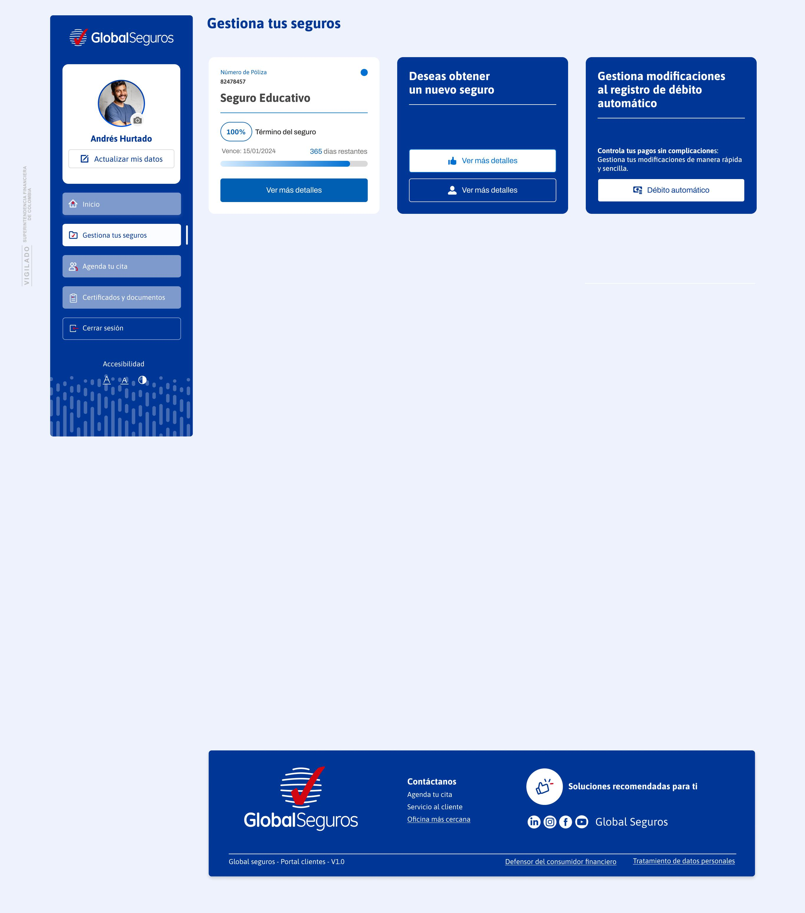
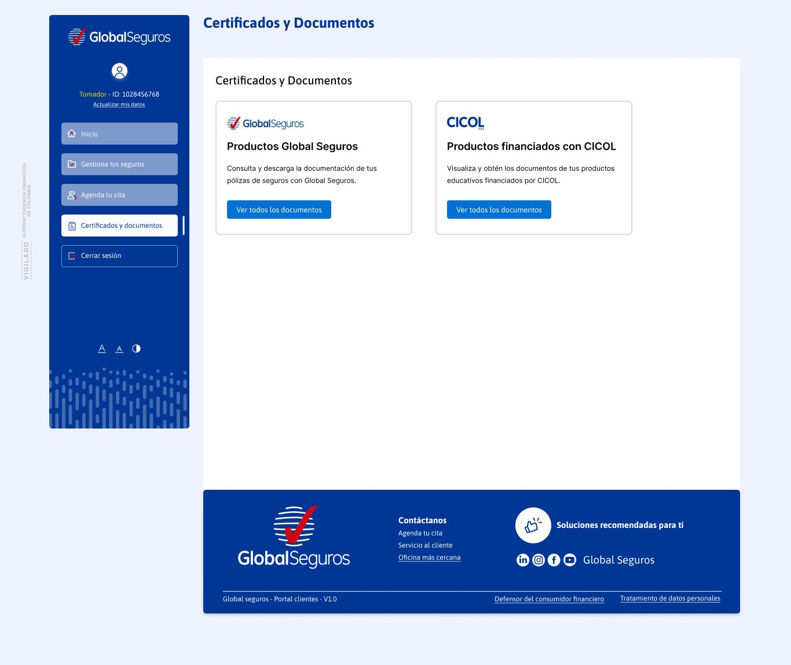

Acceso a Certificados CICOL
Existen dos formas de acceder a los certificados de tus productos financiados con CICOL dentro del Portal de Clientes.

Desde la tarjeta de tu producto financiado
En la pantalla principal, dentro de la tarjeta de producto cuenta con un acceso directo en la columna derecha donde los usuarios pueden gestionar y descargar certificados específicos sin salir de la sección.

Desde el menú de Certificados y Documentos
Selecciona la tarjeta de la compañía correspondiente a los certificados que deseas consultar, como CICOL para productos financiados o Global Seguros según tu necesidad.
¿Qué certificado necesitas descargar?
Selecciona el tipo de certificado que necesitas para ver el tutorial paso a paso.
Declaración de Renta
Permite descargar los certificados tributarios requeridos en la elaboración de la declaración de renta. Filtra por año.
Estado de Cuenta
Consulta el estado detallado de tus créditos activos o terminados, revisa los pagos realizados y pendientes, y descarga tu estado de cuenta actualizado.
Certificado de Saldo
Visualiza y descarga el certificado que muestra el saldo pendiente de tu crédito. También puedes previsualizarlo antes de obtener el documento.
Certificado de Paz y Salvo
Descarga la constancia oficial que certifica que no tienes deudas pendientes con CICOL.
Herramientas del Portal
Conoce las acciones que puedes realizar dentro de la sección de certificados CICOL. Haz clic en cada una para más detalles.
visibility Previsualización
Permite ver el contenido del certificado antes de descargarlo. Así puedes confirmar que corresponde al producto o período que necesitas sin necesidad de abrir un archivo externo.
Declaración de Renta
El ícono del ojo permite previsualizar cada certificado
check_box Casillas de Verificación
Usa las casillas para elegir uno o varios certificados a la vez. Puedes marcarlos según tu necesidad y descargarlos en bloque, ahorrando tiempo.
Declaración de Renta
DescargarSelecciona varios documentos con las casillas de la izquierda
download Botón Descargar
Haz clic en Descargar para guardar el certificado en formato PDF. Para abrirlo necesitarás tu contraseña de ingreso al portal.
Estado de Cuenta
download DescargarSelecciona productos y haz clic en Descargar
open_in_new Botón Gestionar
Al hacer clic en Gestionar, se redirecciona a la pantalla de detalle para generar el certificado. Los campos a completar varían según el tipo de certificado CICOL.
Certificados CICOL
Haz clic en Gestionar para ir al detalle del certificado
swap_horiz Selección de Compañía
Cambia entre Global Seguros y CICOL usando el botón de selección. Asegúrate de tener seleccionada la compañía CICOL para ver los certificados de tus productos financiados.
Selecciona la tarjeta de CICOL para ver tus productos financiados